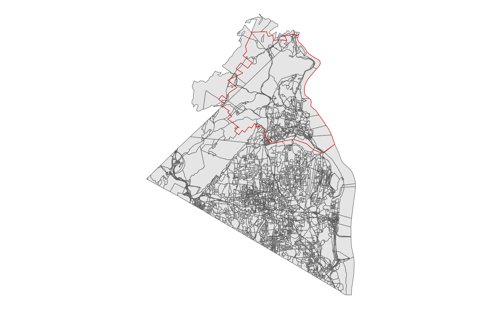
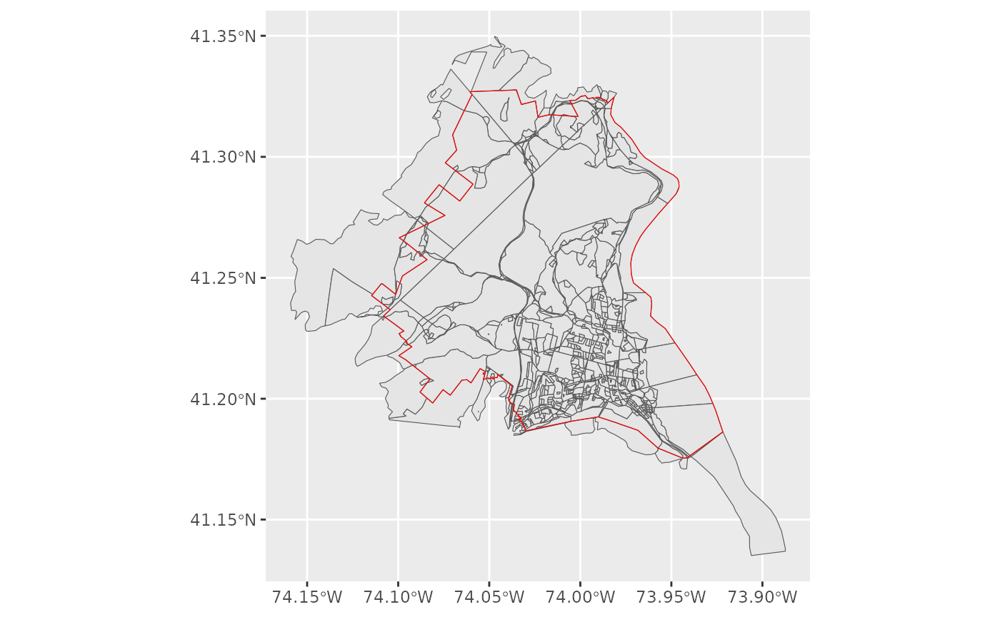
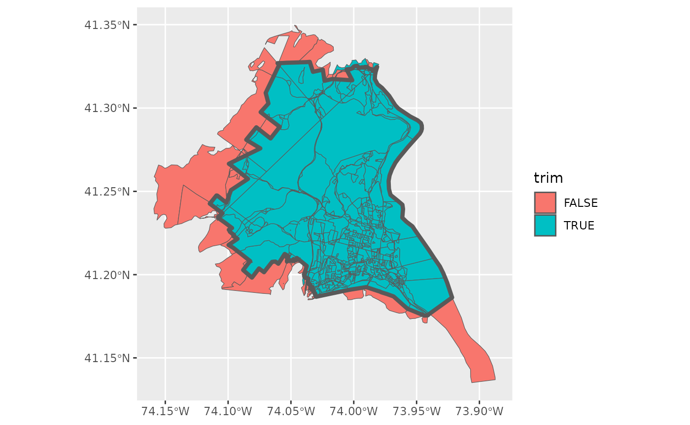
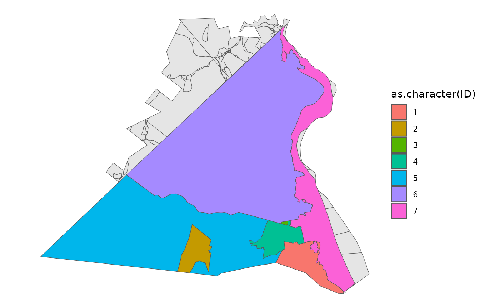
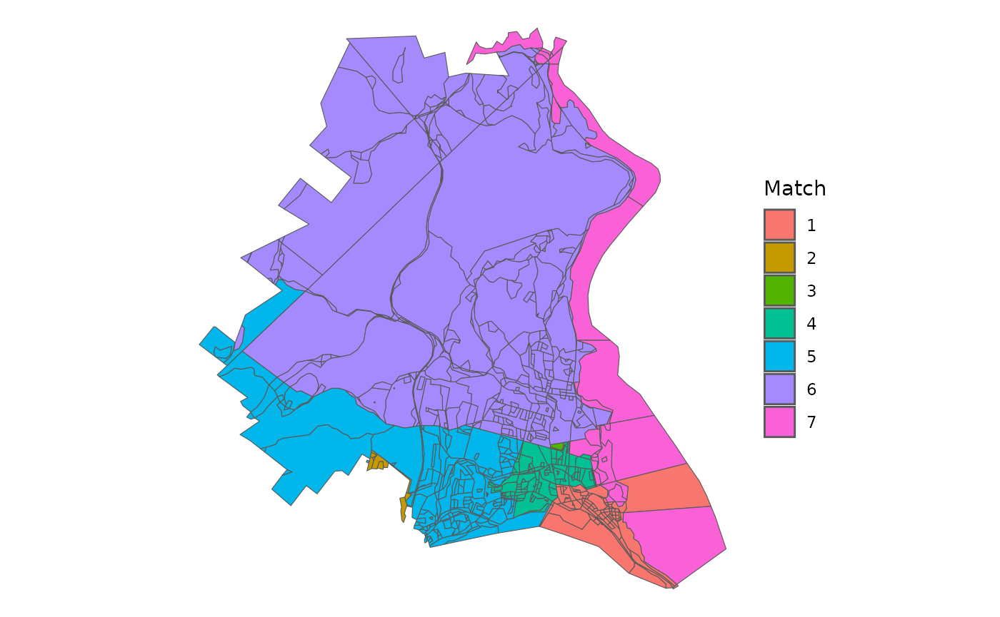

vignettes/Redistricting_School_Districts.Rmd
Redistricting_School_Districts.RmdThe primary motivation behind this package is to make data preparation steps easier for redistricting simulation methods within R. This vignette covers a few key tasks, primarily building a block level dataset of population data, subsetting by spatial relationship, and then running a basic simulation. This is shown in the context of dividing North Rockland Central School District in NY into 7 wards at the block level.
First, we want to build a block level dataset. The school district intersects two counties, though almost all of the population in the district comes from Rockland County. create_block_table allows you to build block level datasets with the primary variables needed for redistricting purposes - total population by race and voting age population (VAP) by race.
blockRockland <- create_block_table(state = 'NY', county = 'Rockland')
blockOrange <- create_block_table(state = 'NY', county = 'Orange')
block <- bind_rows(blockRockland, blockOrange)For this vignette, rather than running the above, we use included
data. orange is a subset of Orange County which intersects
with the school district. Rockland is the entire block dataset. These
polygons are simplified using rmapshaper to make them
smaller.
Next, we need the shape for North Rockland, which can be obtained
from the R package tinytiger as below. The same idea holds
for having target areas, such as counties or legislative districts,
though they are less likely to directly use the block level data.
school <- tt_unified_school_districts(state = 'NY') |> filter(str_detect(NAME, 'North Rockland'))As above, we use a saved version that doesn’t need API access to download.
data("nrcsd")
school <- nrcsdThe immediate and common difficulty here is that we have nearly 15,000 blocks, but the target region, in this case the school district outlined in red is significantly smaller than that.
block |> ggplot() +
geom_sf() +
geom_sf(data = school, fill = NA, color = 'red') +
theme_void() As a first pass, we can use the geo_filter function, which wraps sf’s st_intersects and filters only to those that intersect.
block <- block |> geo_filter(to = school)This drops us down to 852 block and is a conservative filtering, as you only need to intersect at a single point.
block |> mutate(id = row_number()) |>
ggplot() + geom_sf() +
geom_sf(data = school, fill = NA, color = 'red')  Yet, we probably want to go further than that, getting rid of the various external pieces. We can use geo_trim to do just that. First, we want to check what would be thrown away at the default area threshold of 1%. Below, I’ve first checked what would be trimmed away, by setting bool = TRUE and plotting it.
block$trim <- block |> geo_trim(to = school, bool = TRUE)
block |> ggplot() + geom_sf(aes(fill = trim)) +
geom_sf(data = school, fill = NA, lwd = 1.5)
To me, it looks like we are subsetting correctly with this threshold, so we actually trim away this time.
block <- block |> filter(trim)Very often, at this step, we want to consider including information about other geographies, particularly towns, villages, or counties. In the package, for illustration purposes, I’ve included a small towns dataset from the Rockland County GIS Office.
data("towns")
block |> ggplot() +
geom_sf() +
theme_void() +
geom_sf(data = towns, aes(fill = as.character(ID)))
From this, we can then try to match our blocks to towns. I use the centroid option, which often works the most quickly. The default method, ‘center’ is slower, but more accurate.
matched <- geo_match(from = block, to = towns, method = 'centroid')Now, I’ve used the default tiebreaker setting, which assigns all blocks to a town, even if they do not overlap.
block |>
ggplot() +
geom_sf(aes(fill = as.character(matched))) +
theme_void() +
labs(fill = 'Match') So, we want to make two particular edits to the outcome. First, we create a fake Orange County Town for the blocks that come from Orange County, though there are only a few dozen people who live in those blocks.
Second, we can see that one block in 7 was matched to 1 because it didn’t properly intersect the towns and thus went for the closest town by distance between their centroids. A similar issue occured for two other blocks.
Now, to figure out what’s going on and try to clean it up, we can build an adjacency graph for each block by town and see which pieces are discontinuous.
adj <- adjacency(shp = block)
comp <- check_contiguity(adj = adj, group = block$TownID)
which(comp$component > 1)## [1] 6 190 272 576 586 591Then, using that information, we can figure out three of these need to be renamed.
block$TownID[409] <- 7
block$TownID[586] <- 2
block$TownID[591] <- 4Now all towns are completely connected or contiguous.
comp <- check_contiguity(adj = adj, group = block$TownID)
which(comp$component > 1)## [1] 6 190 272Finally, we have the data in a simulation-ready state! We can now use the adjacency list created above with redist.adjacency to run a simulation using redist.smc. See the redist package for more information about what’s going on here.
## Loading required package: redistmetrics##
## Attaching package: 'redistmetrics'## The following object is masked from 'package:dplyr':
##
## tally##
## Attaching package: 'redist'## The following object is masked from 'package:stats':
##
## filter
map <- redist_map(block, pop_tol = 0.02, ndists = 7, adj = adj)
sims005 <- redist_smc(map, nsims = 50, counties = TownID, silent = TRUE)## Warning: Counties were not contiguous; expect additional splits.
plans <- get_plans_matrix(sims005) |> unique(MARGIN = 2)
par <- redist.parity(plans = plans, total_pop = block$pop)
comp <- redist.compactness(shp = block, plans = plans, adj = adj, measure = 'EdgesRemoved')## Warning in redist.compactness(shp = block, plans = plans, adj = adj, measure = "EdgesRemoved"): 'redist.compactness' is deprecated.
## Use 'comp_edges_rem' instead.
## See help("Deprecated")
comp_m <- comp |> group_by(draw) |> summarize(mean = mean(EdgesRemoved))
pick <- tibble(parity = par) |> bind_cols(comp_m) |> slice_max(order_by = mean, n = 1) |> pull(draw)In short, the above uses a Sequential Monte Carlo algorithm to draw 50 compact districts that try to preserve towns. From those, I pick a map that is on average, pretty compact. You would typically aim for about 100 times this number of simulations to start. This is shortened for vignette compilation time.
Then we have the basic information we want and we can look at the VAP data to see that we have one majority minority Hispanic ward and one potential coalition ward.
block |>
mutate(district = plans[,pick]) |>
group_by(district) |>
summarize(across(starts_with('vap'), sum))## Simple feature collection with 7 features and 10 fields
## Geometry type: POLYGON
## Dimension: XY
## Bounding box: xmin: -8250400 ymin: 5038222 xmax: -8228926 ymax: 5061114
## Projected CRS: WGS 84 / Pseudo-Mercator
## # A tibble: 7 × 11
## district vap vap_white vap_black vap_hisp vap_aian vap_asian vap_nhpi
## <int> <dbl> <dbl> <dbl> <dbl> <dbl> <dbl> <dbl>
## 1 1 5329 3353 715 928 3 265 0
## 2 2 5199 1357 557 3091 10 129 0
## 3 3 5466 4538 135 650 9 82 2
## 4 4 4906 1257 422 3038 8 115 1
## 5 5 5244 4325 162 550 2 158 0
## 6 6 5261 3764 366 807 8 256 0
## 7 7 5055 1836 909 1968 6 265 2
## # ℹ 3 more variables: vap_other <dbl>, vap_two <dbl>, geometry <POLYGON [m]>